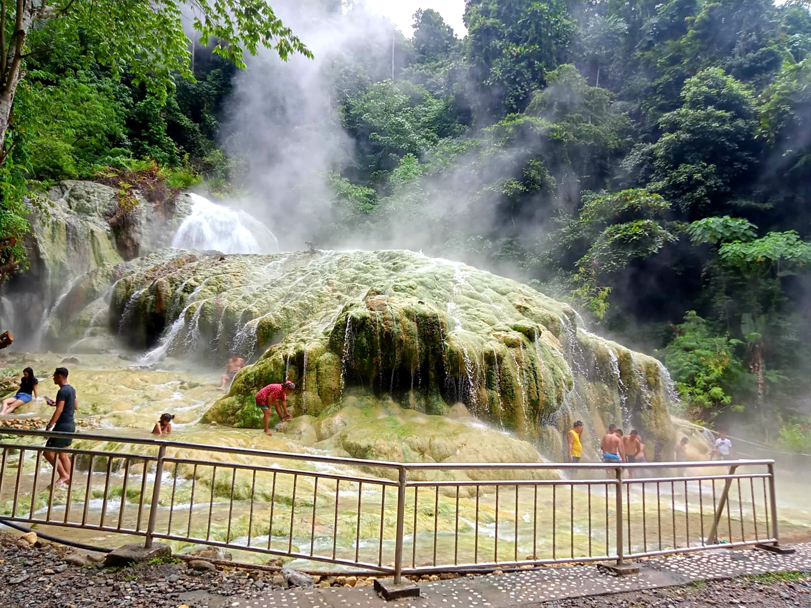

🌿 Welcome to Bilawa Hot Waterfalls Nature's Healing Embrace




Nestled in the lush mountains of Barangay Mainit, Maco, Davao de Oro, Bilawa Hot Waterfalls offers a unique blend of natural beauty and therapeutic warmth. Formerly known as Mainit Sulfuric Hot Spring, this geothermal wonder is renowned for its steaming waterfalls cascading over mineral-rich rocks, creating a surreal landscape of yellow-hued formations; .
info@escapetomaco.com